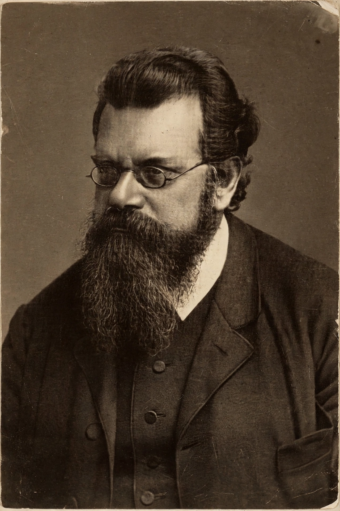

| Born | 20 February 1844, Vienna, Austrian Empire |
|---|---|
| Died | 5 September 1906 (aged 62), Duino, Austria-Hungary |
| Known for | Boltzmann constant, statistical mechanics, Boltzmann equation, Stefan–Boltzmann law |
| Fields | Physics |
Ludwig Eduard Boltzmann (20 February 1844 – 5 September 1906) was an Austrian physicist and philosopher. His greatest achievements were the development of statistical mechanics and the statistical explanation of the second law of thermodynamics.
In 1877 he proposed the entropy formula S = k log W, relating entropy to the number of microstates W, with the Boltzmann constant k. He derived the Boltzmann equation for gas kinetics, the Maxwell–Boltzmann distribution, and contributed to the Stefan–Boltzmann law for blackbody radiation. His atomistic views were contested by Ernst Mach and Wilhelm Ostwald during his lifetime but were vindicated shortly after his death by experiments on Brownian motion.
Born in Vienna, Boltzmann studied at the University of Vienna under Josef Stefan. He held chairs at Graz, Vienna, Munich and Leipzig. Suffering from ill health and depression, he died by suicide while on holiday in Duino in 1906. His tombstone in Vienna bears his entropy formula.
The Boltzmann constant, lunar crater Boltzmann, and Boltzmann Medal commemorate him. He is regarded as a founder of statistical physics alongside James Clerk Maxwell and Josiah Willard Gibbs.